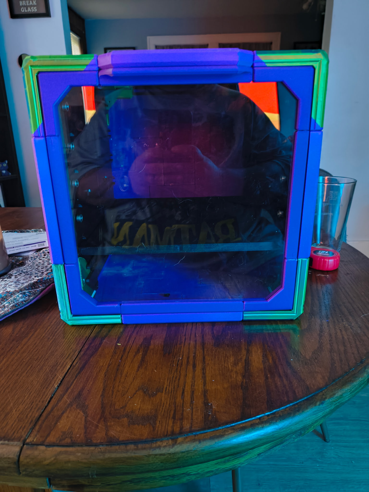
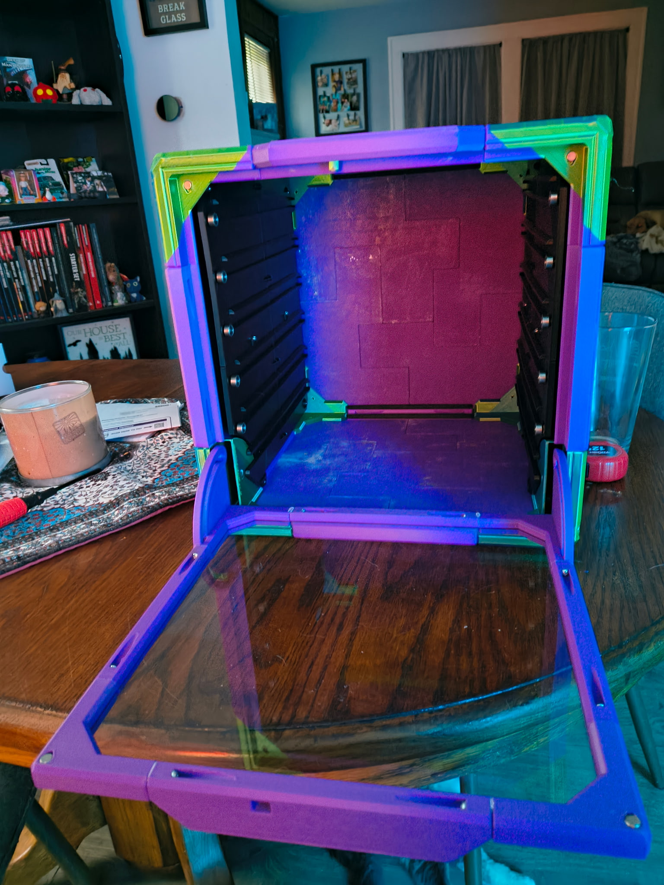
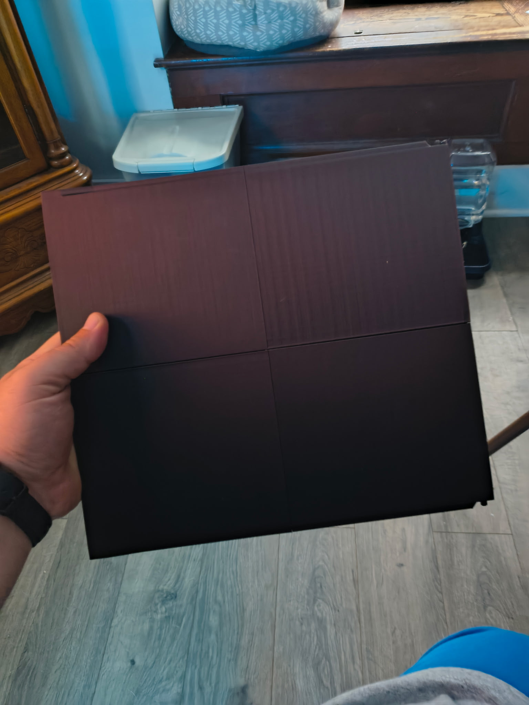

Captains Log

July 29th 2026
Grid Cube Update
I have printed the majority of the parts needed to complete the GridCube, at least my first one. I ran into some small probles with the files, when it came time to printing and putting it together. For instance the file for the left screen bar, the right one, and the bottom one, all look similar. This means that when I thought I was printing 3 distinct parts I was actually printing the bottom one a few times too many.
If you look closely at the picture you can see that there are finger prints all over the plexiglass. That is from me trying to put it together then having to take it apart a few times to get it right. But I think overall it looks pretty good. I don't know that I would use the same green corners for my second box though. The reality is I probably won't print them in any color other than black. Its just cheaper and faster for me to print because I don't have to swap filament back and forth.
To finalize this build I need to print at least one more shelf, likely 2 and then cover them with this magnetic tape that I have purchased in the past. I think I have some left, but I might need to order one more roll. Depends on whether I can find where Katie put it or not. This isn't all on her, I mean I kept it in the top of our coffee table. I found an alternative type from what I got from Amazon on Walmarts website. I also found a way to remove Amazon from my search results on google by adding -site:amazon.com when I perform a search, so I'm pretty happy about that.
Once I complete this one though I will definitely start building at least one other. When I placed the order for the acrylic sheet I used for the front door. I may even encorporate the lighting option that is available. I also want to print a cube for my paints, but I may have to wait for that since it is likely to require quite a few rolls.



Filament Purchasing

Due to the problems I have had with Amazon, as well as my own stubborness and pride I will have to find an alternative location to purcahse my filament from. I found recently that Costco sells filament and if you buy it in bulk it comes down to $9 a roll, which is the cheapest I have ever purcahsed it. The problem though is that what Costco is selling is normal PLA, which has a print speed of 30-70 mm/s.
This is a problem for me since my printer prints at up to 600 mm/s. I don't slow it down, especially for large projects like this cube because it's good enough for the quality of what it's printing. I used to slow it down to get better results when printing smaller things like miniatures, but I have since purchased a resin print so I wont be printing smaller things like that on my FDM one.
The good news here is that I can order directly from Elegoo, which makes my preferred filament anyway. If I buy 10 spools at a time with tax and shipping it comes to $112.48 which means that each spool would only cost $11.25 if you round up. While not as cheap as Costco, it is still a better deal than I ever got from Amazon, and is the speed I need for my printer.
The othe reason I prefer the PLA+ filament is that it is not as brittle as normal PLA. That doesn't mean it will not or cannot break, it just means that it is more flexible and more break resistent. I would also like to state that the color filament I have purcahsed for the GridCube project is not PLA+, at least I don't think, and it printed fine. I would hate however to buy something that is not rated for that speed, have 10 rolls of it and have to fight with it the whole time. My personal time has to be worth something!